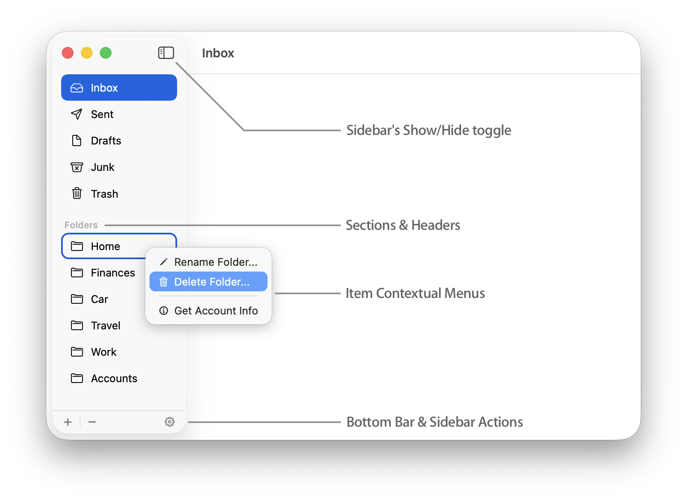
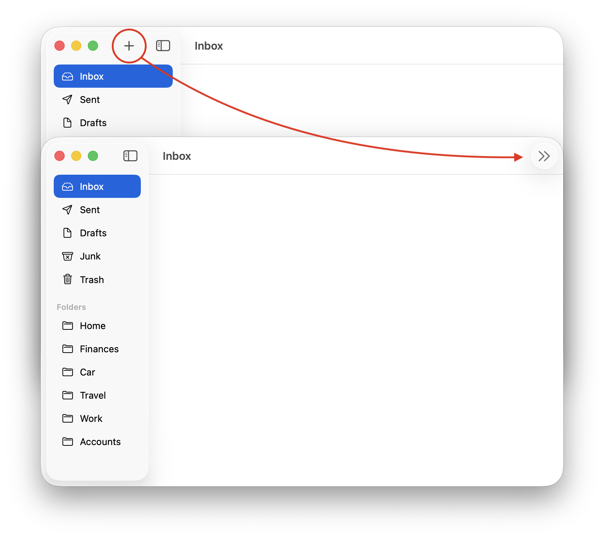
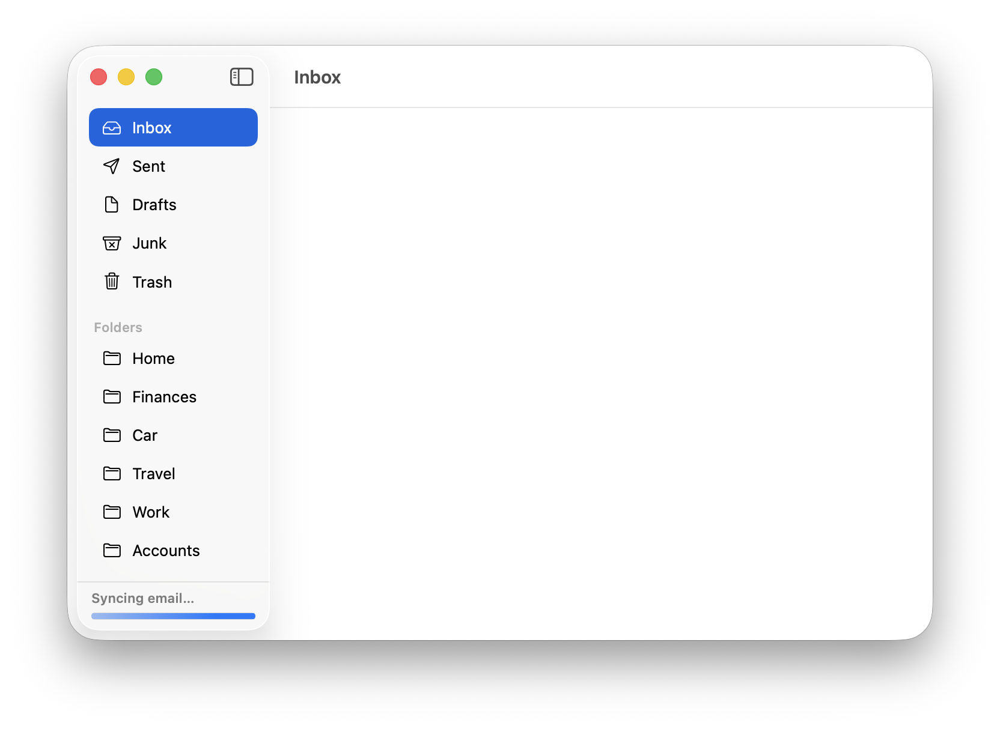
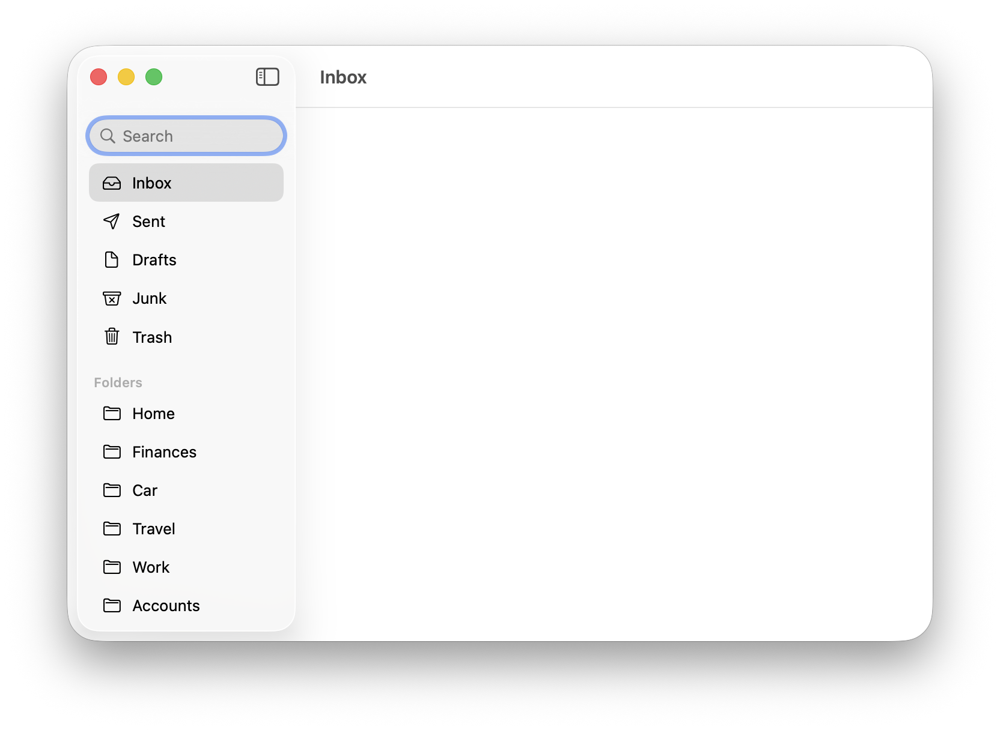

The following sections are general guidelines that describe fundamental Sidebar (also known as a Source List) design principles for Mac applications. Following these guidelines will help you create functional and consistent Sidebar implementations that are easy for Mac users to understand and use.
A sidebar (source list) is an area of a window, usually set off by a movable splitter, that provides users with a way to navigate or select objects in the app. Typically, users select an item in the sidebar that they act on in the main (details) part of the window.
In simpler terms, users select an item in the sidebar and it will display its main content in the details side of the window. Sidebars are typically found in what are "shoebox" applications and not typically found or used in Document-based applications.
Consider using a sidebar to give users a file-system abstraction. A sidebar's content can shield users from the details of file and document management and instead allow them to work with a user-customizable, app-specific container that holds related items.
For example, Music (Apple Music app), allows users to ignore the file-system locations of their individual songs and instead work with Libraries and Playlists.
Since Sidebars are now full-height of the window they reside in, their toolbar width can be variable depending on how the user resizes the sidebar. Because of this, it is difficult to know up-front how many toolbar items can be shown.
If you place more than the automatic Show/Hide Sidebar toggle toolbar button, you risk them "hiding" in the overflow menu on the right-end of the window. This may confuse your users, especially if these buttons are important to the addition or navigation of content in your application.
Do not place additional toolbar items in the sidebar column. If you need actions that pertain to the sidebar or the content presented in the sidebar, use a Bottom Bar in the sidebar instead.
The Bottom Bar is a strip that runs along the bottom edge of the sidebar that can contain controls or application status. You might include items like:
A Sidebar's Bottom Bar displaying common actions for the application.
A Sidebar's Bottom Bar displaying application sync status.
For actions needed to be placed in the Toolbar area for the sidebar, add them to the Bottom Bar of the sidebar instead. SwiftUI and AppKit provide APIs to simplify adoption of Bottom Bars in Sidebars.
NSSplitViewItemAccessoryViewController and addBottomAlignedAccessoryViewController(_:) documentation.TabView, refer to the tabViewSidebarBottomBar(content:) documentation.List or ScrollView, refer to the safeAreaBar(edge:alignment:spacing:content:) documentation.Further customization of Sidebar items can be done with Contextual Menus (right-click menus). This is an excellent option for items that may be important but not important enough to display in the Bottom Bar.
For important or commonly-used actions, include them in both the Bottom Bar as a button action and in the Contextual Menu as a menu item option.
If you anticipate your users may have many items in their sidebar, consider adding a Search Bar at the top to filter down on the items in the list.
Refer to Adding a search interface to your app on Apple's Developer website for documentation and sample code.
Avoid displaying more than two levels of hierarchy in a sidebar. If the data you need to display is organized in more than two levels of hierarchy, create a second source list between the app’s main sidebar and the details view. The Notes app has this configuration.
If your app is centered on the navigation of deeply nested objects, consider using a browser view instead of multiple source lists.
If necessary, display titles inside the Sidebar. Sidebars don’t generally have headers but they can display them to distinguish subsets or logical groupings of data. For example, in the screenshots used for this document, user-defined folders have their own visual grouping with a header title of "Folders."
allowsExpansionToolTips. If the string in the label is truncated due to the sidebar's narrow width, an expanesion tooltip appears on hover revealing the entirety of the string.Note: If you're using SwiftUI, you'll have to wrap NSTextField inside an NSViewRepresentable to enable this behavior.
I enjoy creating content that helps other Mac developers ship their best possible work. If you find this content useful and if you're able to, consider perhaps buying me a coffee. But if not, no worries! I'd appreciate you at least sharing this document with your fellow Mac developers posting it on social media! Thank you!
Reach out via Mastodon if you have suggestions that would improve this article.
Mastodon